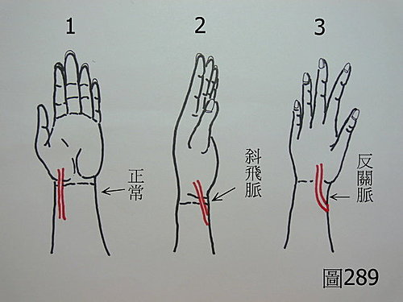

脈理醫理學 41：反關斜飛
作者：陳建元
「反關斜飛」是指〝反關脈〞與〝斜飛脈〞，見〈圖289〉。正常人的脈管位置，絕大多數都是像〈圖289〉的1，但有極少數的人（經驗上大抵100個中有1～4個），脈管位置是像〈圖289〉中 2 或 3 的這種型態，2叫做〝斜飛脈〞，3叫做〝反關脈〞。

反關脈與斜飛脈，都是正常的生理解剖變異，並不是病態。臨床的時候要特別注意到，如果把病患的正常脈位，發現把不到脈時，不可以馬上判斷說患者的脈，是弱到把不到，而是要先找一找，看看是否病人的解剖位置較特殊，是呈現反關斜飛的狀態，才不會造成誤判。有的人是只有一手反關斜飛脈，有的人則是兩手都是反關斜飛脈。
【引用請先來信告知徵求同意，若有涉及販售營利等商業行為，版權所有拷貝盜用必究。】
【藥王脈學講壇】http://blog.xuite.net/drjychen/twblog